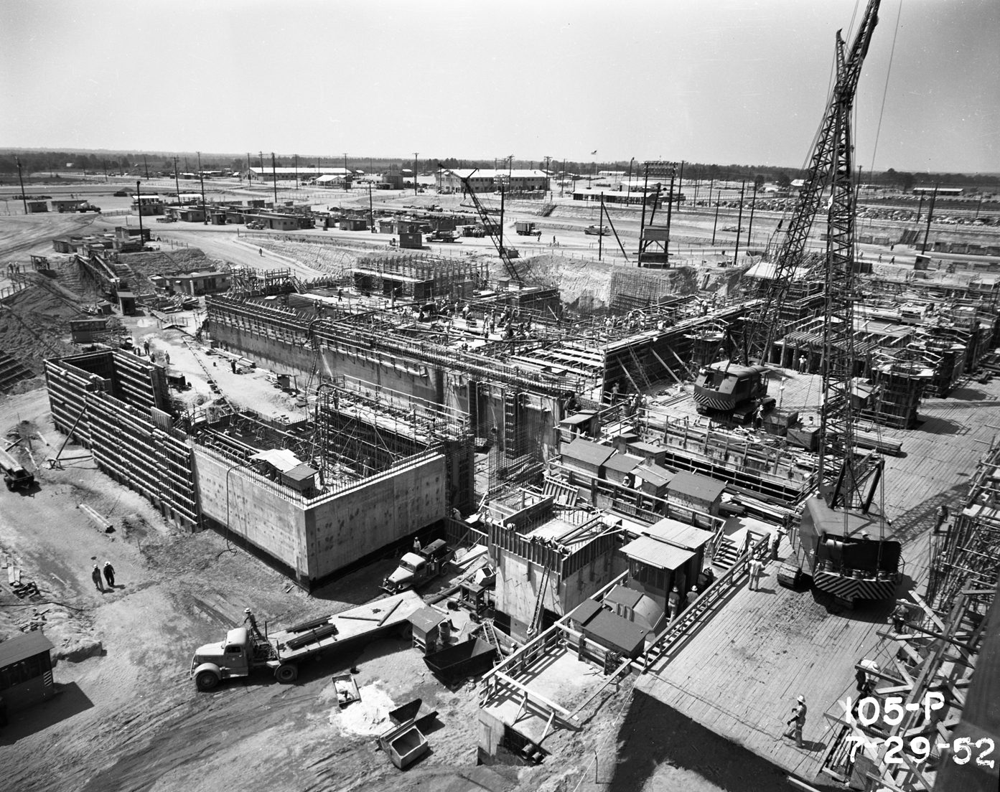

Part 3 of 7 in Chapter 1
Building the Plant
According to the Natural Resources Defense Council, construction began on reactors in 1951 (reactor R in June, P in July, L in October) (IA). Employment on the project peaked at 38,582 during construction (WB: SRS at Fifty, p. 184). The Bureau of Labor Statistics followed the work force in a 1952 study (IA: part I).
The study records Black tenant farmers arriving in Augusta looking for jobs in May 1951. At an NAACP (National Association for the Advancement of Colored People) meeting in Aiken that September, speakers accused Du Pont and an Augusta union of keeping Black workers out of skilled jobs, and said they had enough evidence to go to court.

.jpg){kind=link}
Getting hired was a fight of its own. In November 1951 a House labor subcommittee under Graham Barden held five days of hearings in Augusta on charges that union membership had become a condition of work (DL).
Its report the next year found that Du Pont hired manual labor through a verbal understanding with the AFL (American Federation of Labor) building-trades unions, turning job seekers away at the gate, and that Atomic Energy Commission officials had either approved or failed to find out (DL). In November 1952 pickets from an AFL engineers' union nearly stopped construction, with about 25,000 other workers honoring the line (IA).
The same system kept Black workers out of the skilled trades. The National Urban League's field notes, filed with the Barden hearings, record that it pressed Du Pont in August 1951 over its failure to hire Black electricians, mechanics, plumbers, welders and ironworkers.
Company officials replied that as long as the unions could supply the workers, they would hire from no other source. Apart from 116 Black carpenters, they would not say how many Black workers they employed (DL). When Truman created a committee on government contract compliance that December, Jet expected the Savannah River contractors to be among its first targets (IA).
Housing the workers was its own crisis. In February 1951 Congress held a hearing in Aiken. It expected construction to peak around the start of 1953 (DL). A year later, in February 1952, the mayors of New Ellenton and Augusta testified about dormitories and about Du Pont's part in housing workers (DL).
In 1953 House & Home reported about 4,000 trailers for married workers (IA). The housing builder later sued Du Pont in a case that reached the Supreme Court (DL), and South Carolina's attempt to tax Du Pont's work on the plant set out what a government-owned, contractor-operated plant was in law (DL).
Du Pont wrote its own record of all this, volume by volume, in construction and design histories now on OSTI (Office of Scientific and Technical Information) (WB: OSTI 10159481; WB: OSTI 10151705). The company's administrative files are at the Hagley Museum and Library (WB: DOE finding aid).
By the mid-1950s the plant was built. The next section, Running the Reactors, follows its reactors and separations plants at work.